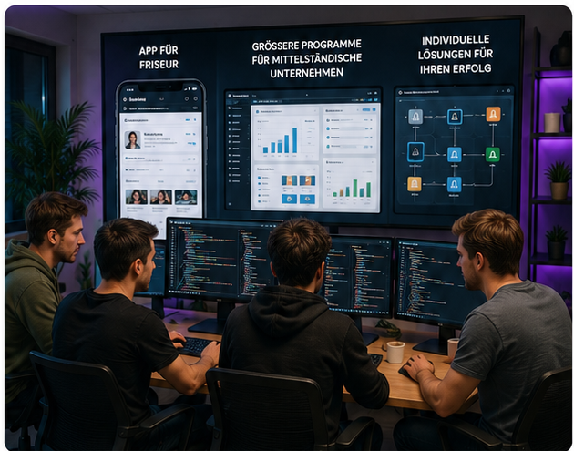

Erfahrung aus Vertrieb, Marketing und Beratung trifft auf modernes Know-how in KI, Automatisierung und digitaler Unternehmensentwicklung.
Mein beruflicher Weg verbindet langjährige Erfahrung in der Versicherungsbranche und im Vertrieb mit fundiertem Wissen in Marketing, Kommunikation, KI und Automatisierung.
Durch viele Jahre im direkten Kundenkontakt kenne ich die Anforderungen von Beratung, Verkauf und Kundenkommunikation aus der Praxis. Für mich steht deshalb nicht die Technik allein im Mittelpunkt, sondern die Frage: Welche Lösung bringt einem Unternehmen wirklich einen Vorteil?
Mit GM Business Marketing unterstütze ich Unternehmen und Selbstständige dabei, digitale Prozesse sinnvoll zu vereinfachen, professionell nach außen aufzutreten und moderne Technologien gezielt einzusetzen.
1995
HBLA für wirtschaftliche Berufe
Abschluss mit Matura
2020–2021
KI-Softwareentwicklung
Zusatzausbildung
2021–2022
KI-Automation
Zusatzausbildung
2022–2023
Dipl. Marketingmanagerin
Diplomlehrgang Marketingmanagement – WIFI
Diplomausbildung
Dipl. Psychosoziale Beraterin
Kommunikation, Gesprächsführung und professionelle Beratung
Technik funktioniert dann am besten, wenn sie zu den Menschen, Abläufen und Zielen eines Unternehmens passt.
Langjährige Erfahrung in Versicherungsbranche und Vertrieb schafft ein tiefes Verständnis für Kundenbedürfnisse, Beratung und Verkauf.
Professionelles Marketing verbindet Sichtbarkeit, klare Kommunikation und einen starken digitalen Unternehmensauftritt.
Moderne Technologien werden dort eingesetzt, wo sie Prozesse vereinfachen, Zeit sparen und den Arbeitsalltag sinnvoll unterstützen.
Hinter GM Business Marketing steht heute ein professionelles Entwicklungsteam aus fünf Programmierern, das mich bei der technischen Konzeption und Umsetzung unserer Projekte unterstützt.
Gemeinsam entwickeln wir Lösungen für unterschiedlichste Anforderungen: von digitalen Anwendungen für kleinere Dienstleistungsbetriebe – beispielsweise Termin-, Kunden- oder Service-Apps für Friseure – bis hin zu umfangreicheren, individuell programmierten Systemen und Automatisierungen für mittelständische Unternehmen.

Beispielhafte Visualisierung unseres Entwicklungsbereichs
Bei GM Business Marketing gibt es keine Lösungen von der Stange. Jedes Unternehmen hat andere Abläufe, andere Kunden und andere Ziele.
Deshalb beginnt eine Zusammenarbeit mit einer persönlichen Analyse: Was funktioniert bereits gut? Wo entstehen unnötige Zeitaufwände? Welche Prozesse lassen sich vereinfachen? Und welche digitale Lösung ist wirtschaftlich wirklich sinnvoll?
Moderne Technologie soll Arbeit erleichtern – nicht komplizierter machen.
In einem kostenlosen Erstgespräch besprechen wir Ihre Anforderungen und mögliche digitale Lösungen ganz unverbindlich.
Kostenloses Erstgespräch buchen